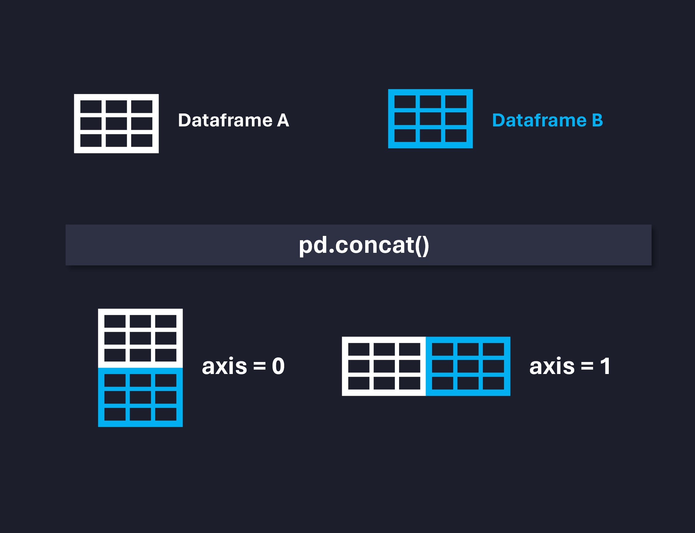
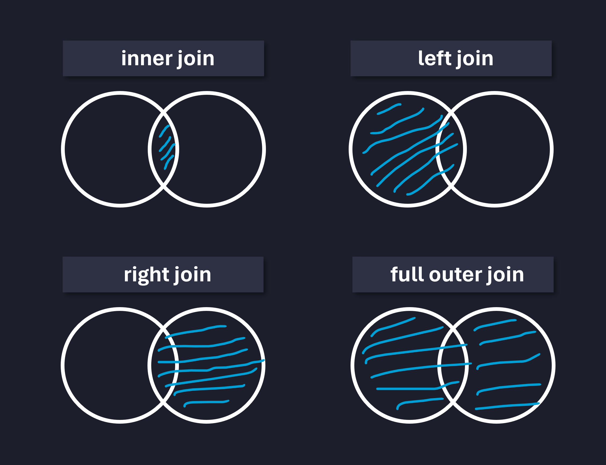

import pandas as pd
precos_cafe_18022024 = pd.read_csv('dados/preco_cafes/precos_cafe_dia18.csv')
precos_cafe_19022024 = pd.read_csv('dados/preco_cafes/precos_cafe_dia19.csv')Manipulação de Dados com Pandas
Junções
Nesta aula, vamos trabalhar com a junção de dois ou mais dataframes utilizando dois métodos:
- Concatenação: via método
concat - Junções: via método
merge
Isso é muito útil quanto temos dados em duas tabelas diferentes, mas que possuem relação entre si e, logo, podem ser cruzados para a obtenção de insights.
1. Concatenação com o método concat
Consideremos dois dataframes distintos que trazem preços de café em três determinadas lojas, nos dias 18/02/2024 e 19/02/2024, respectivamente.
Dia 18-02-204:
precos_cafe_18022024.head()| Data | Tipo_cafe | Preco_loja_A | Preco_loja_B | Preco_loja_C | |
|---|---|---|---|---|---|
| 0 | 2024-02-18 | Café Tradicional | 5.99 | 6.49 | 5.79 |
| 1 | 2024-02-18 | Café Espresso | 3.49 | 3.99 | 3.29 |
| 2 | 2024-02-18 | Café Descafeinado | 6.99 | 7.49 | 6.79 |
Dia 19-02-204:
precos_cafe_19022024.head()| Data | Tipo_cafe | Preco_loja_A | Preco_loja_B | Preco_loja_C | |
|---|---|---|---|---|---|
| 0 | 2024-02-19 | Café Tradicional | 5.89 | 6.59 | 5.69 |
| 1 | 2024-02-19 | Café Espresso | 3.59 | 4.09 | 3.39 |
| 2 | 2024-02-19 | Café Descafeinado | 6.79 | 7.59 | 6.89 |
Frequentemente, precisamos consolidar dados, isto é, unificar esses dois ou mais dataframes, já que eles tratam do mesmo assunto. Isso facilita possíveis análises posteriores. Logo, podemos concatenar esses dataframes tanto na direção das linhas (axis=0) quanto na diração das colunas (axis=1), como mostra a Figura abaixo.

Nesse caso, fica nítido que a concatenação deve ocorrer no eixo das linhas. Isso pode ser feito da seguinte maneira:
# pd.concat([df_1, df_2], axis=EIXO, ignore_index=True):
preco_cafes = pd.concat(
[precos_cafe_18022024, precos_cafe_19022024],
axis=0, ignore_index=True
)
# visualizando o resultado:
preco_cafes| Data | Tipo_cafe | Preco_loja_A | Preco_loja_B | Preco_loja_C | |
|---|---|---|---|---|---|
| 0 | 2024-02-18 | Café Tradicional | 5.99 | 6.49 | 5.79 |
| 1 | 2024-02-18 | Café Espresso | 3.49 | 3.99 | 3.29 |
| 2 | 2024-02-18 | Café Descafeinado | 6.99 | 7.49 | 6.79 |
| 3 | 2024-02-19 | Café Tradicional | 5.89 | 6.59 | 5.69 |
| 4 | 2024-02-19 | Café Espresso | 3.59 | 4.09 | 3.39 |
| 5 | 2024-02-19 | Café Descafeinado | 6.79 | 7.59 | 6.89 |
2. Junções com o método merge
Basicamente, estes vários tipos de junções possíveis com este método - a Figura abaixo ilustra algumas.

Para ilustrar os três primeiros casos (inner, left e right), criaremos dois dataframes para funcionários e dapartamentos.
Registro dos clientes (cadastro):
# DataFrame de funcionários:
funcionarios = pd.DataFrame({
'ID_funcionario': [1, 2, 3, 4, 5],
'Nome': ['João', 'Maria', 'Pedro', 'Ana', 'Paula'],
'Departamento_ID': [101, 102, 101, 103, 102]
})
funcionarios| ID_funcionario | Nome | Departamento_ID | |
|---|---|---|---|
| 0 | 1 | João | 101 |
| 1 | 2 | Maria | 102 |
| 2 | 3 | Pedro | 101 |
| 3 | 4 | Ana | 103 |
| 4 | 5 | Paula | 102 |
Registro dos departamentos:
# DataFrame de departamentos:
departamentos = pd.DataFrame({
'ID_depto': [101, 102, 103, 104],
'Departamento': ['Vendas', 'Marketing', 'TI', 'RH']
})
departamentos| ID_depto | Departamento | |
|---|---|---|
| 0 | 101 | Vendas |
| 1 | 102 | Marketing |
| 2 | 103 | TI |
| 3 | 104 | RH |
Junção
inner join
Nesse caso queremos a intersecção entre os dataframes A e B, isto é, aquilo que é comum a ambos apenas.
# Inner Join: retorna apenas os registros comuns aos dois dataframes
inner_join = pd.merge(
funcionarios, departamentos,
how='inner',
left_on='Departamento_ID',
right_on='ID_depto'
)
inner_join| ID_funcionario | Nome | Departamento_ID | ID_depto | Departamento | |
|---|---|---|---|---|---|
| 0 | 1 | João | 101 | 101 | Vendas |
| 1 | 3 | Pedro | 101 | 101 | Vendas |
| 2 | 2 | Maria | 102 | 102 | Marketing |
| 3 | 5 | Paula | 102 | 102 | Marketing |
| 4 | 4 | Ana | 103 | 103 | TI |
Junção
left join/right join
Neste caso, desejamos obter os dados de A mais a interseção de A e B (todo os dados de A, mais o que há de comum entre A e B) - no left.
# Left Join: retorna todos os registros do dataframe da esquerda (funcionarios) e os registros correspondentes do dataframe da direita (departamentos_)
left_join = pd.merge(
funcionarios, departamentos,
how='left',
left_on='Departamento_ID',
right_on='ID_depto'
)
left_join| ID_funcionario | Nome | Departamento_ID | ID_depto | Departamento | |
|---|---|---|---|---|---|
| 0 | 1 | João | 101 | 101 | Vendas |
| 1 | 2 | Maria | 102 | 102 | Marketing |
| 2 | 3 | Pedro | 101 | 101 | Vendas |
| 3 | 4 | Ana | 103 | 103 | TI |
| 4 | 5 | Paula | 102 | 102 | Marketing |
O right funciona de maneira análoga, mas o B é a referência.
Junção
full outer join
Aqui, quermos juntar tudo. Quando não há correspondência (assim como em left e right), o Pandasretorna uma entrada nula.
# Full Outer Join: retorna todos os registros quando há uma correspondência em um dos dataframes
full_outer_join = pd.merge(funcionarios, departamentos, how='outer', left_on='Departamento_ID', right_on='ID_depto')
full_outer_join| ID_funcionario | Nome | Departamento_ID | ID_depto | Departamento | |
|---|---|---|---|---|---|
| 0 | 1.0 | João | 101.0 | 101 | Vendas |
| 1 | 3.0 | Pedro | 101.0 | 101 | Vendas |
| 2 | 2.0 | Maria | 102.0 | 102 | Marketing |
| 3 | 5.0 | Paula | 102.0 | 102 | Marketing |
| 4 | 4.0 | Ana | 103.0 | 103 | TI |
| 5 | NaN | NaN | NaN | 104 | RH |
Dica
É possível fazer a junção de mais de 2 dataframes que estejam relacionados entre si. Para isso, cada junção é salva em um novo dataframe (ou sobrescrita) até que se tenha o dataframe final.
# Realizando a primeira junção entre dois dataframe:
juncao_temporaria = pd.merge(df_A, df_B, how='inner', on='ID')
# Realizando a segunda junção entre o resultado da primeira junção e um terceiro dataframe:
juncao_final = pd.merge(juncao_temporaria, df_C, how='inner', on='ID')
# Exibindo o DataFrame resultante da junção interna (inner join):
juncao_final.head()